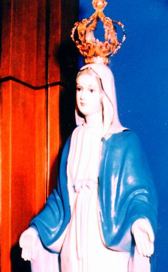

LE
PAYS- La Cor�e du Sud a �t� form�e en 1948,
par l�approbation de la Constitution F�d�rale qui institue le
Gouvernement de la R�publique. De 1950 � 1953 a advenu une terrible
et atroce guerre avec la Cor�e du Nord, un combat abominable parmi des fr�res �
la recherche du domaine et du pouvoir. Cela a apport� des cons�quences
d�sastreuses � la population, barbarement attaqu�e et morte, en causant le deuil
et la pauvret� partout le pays.
LE
PAYS- La Cor�e du Sud a �t� form�e en 1948,
par l�approbation de la Constitution F�d�rale qui institue le
Gouvernement de la R�publique. De 1950 � 1953 a advenu une terrible
et atroce guerre avec la Cor�e du Nord, un combat abominable parmi des fr�res �
la recherche du domaine et du pouvoir. Cela a apport� des cons�quences
d�sastreuses � la population, barbarement attaqu�e et morte, en causant le deuil
et la pauvret� partout le pays.
La reconstruction a �t� lente et
marqu�e par des r�volutions politiques et sociales, dans une �conomie bas�e
essentiellement sur l�agriculture. Toutefois, depuis 1960 le pays a acquis une
croissance industrielle notable, avec l��tablissement de fabriques et des
industries, de provenance des capitales Occidentales et aussi Japonaises. Cet
�v�nement a d�velopp� le pays dans tous les secteurs: commercial, social,
p�dagogique, dans la sant� et aussi dans la propre zone industrielle.
LES HABITANTS -
Aujourd'hui la Cor�e du Sud a plus de 45 millions d'habitants, dans une bande de
terre plus petite que la Suisse. � cause de la grande industrialisation,
approximativement 85% de la population est urbain. S�oul, la capitale, a plus de
10 millions d'habitants.
Cette industrialisation
croissante a forc� les gens le �tudier � apprendre, se en pr�occupant avec
l'instruction, dans une recherche continuelle pour l'am�lioration de leur
connaissance en raison du march� que a grandi et s'est devenu plus exigeant et
comp�titif. Seulement sont victorieux ceux que ont des conditions d'accompagner
l'�volution, en montrant int�r�t dans la recherche des cours techniques et de
une sp�cialisation.
Cependant se a pass� que cette inqui�tude caus�e par le d�veloppement mat�riel
et par le pain abondant de tous les jours, elle n'a pas �t� accompagn�e par
l'�volution spirituelle n�cessaire et indispensable que donne la juste
proportion et compl�te l'existence des personnes au-del� de rehausser la
v�ritable valeur de la vie: comme mati�re et comme esprit. Ce fait a r�fl�chi
directement dans les personnes et dans leur comportement, en montrant que 80% de
la population Cor�enne n'a pas de religion d'aucun type, ils sont ath�es; � peu
pr�s 12,5% sont Bouddhiste et 7,5% de la population ont choisi d'autres
religions. Le Christianisme Catholique n'arrive pas � 2%, c'est-�-dire, il
n'arrive pas � 1 million de Chr�tiens Catholiques.
MAT�RIALISME ET INCR�DULIT�
- Cette r�alit� a facilit� l'augmentation de l'h�r�sie et comme cons�quence, les
pers�cutions aux Chr�tiens, avec l'objectif de les exterminer, parce que selon
la pens�e de la majorit�: "ils �taient des fanatiques
que ont impos� une m�thode de vie inacceptable parce que r�duit la libert�..."
tout cela d� au fait que ils ne croyaient pas et de combattaient les
enseignements chr�tiens, le myst�re que se passe dans la Sainte Messe et aussi,
ils n'acceptaient pas la r�alit� de la pr�sence de DIEU en Corps, Sang, �me et
Divinit�, dans l'Hostie et dans le Vin Consacr�. Ils disaient qu��taient
"invention diaboliques pour laver l'esprit des
sectaires".
Comme il advenait dans d'autres
parties du monde, la pression contre la doctrine de la V�rit� Chr�tienne �tait
tr�s grande, vraiment insupportable. Pour cette raison, l'histoire r�v�le une
quantit� notable de martyrs en plusieurs pays et aussi en Cor�e, qui ont r�pandu
leur sang sur les terres de son pays en attirant la Mis�ricorde Divine sur ceux
que sont rest�s fid�les au SEIGNEUR.
NOTRE R�ALIT� - Ce
pr�ambule se fait n�cessaire, � mesure que dans plusieurs pays du monde,
nous voyons l'humanit� encourir dans les m�mes erreurs et adopter les fa�ons des
vivre inacceptables parce qu'elle est contraire aux principes de la morale et de
la bonne constitution de la famille et du sentiment religieux des personnes.
Et c'est parce que nous voyons
cela avec pr�occupation, et aussi parce que nous croyons que sommes tous fr�res
dans LE CHRIST, les enfants de un m�me P�RE �TERNEL merveilleux que nous a
permis de vivre � fin de LE conna�tre et de L'aimer, nous d�cidons de d�crire
minutieusement, tout que s'est pass� et que c�est se en passant dans la Cor�e.
La grandeur de la manifestation Divine, que encore une fois s�est r�v�l�e dans
les dimensions plus l'immensurables, il d�montre dans pl�nitude l'Amour de
DIEU, en laissant ressortir avec pr�cieux �vidence le supr�me d�sire du
SEIGNEUR : IL Veut le bien-�tre et la salvation de tous SES enfants. Et ce
comportement Divin demande aussi une r�ponse r�solu et imm�diate de toutes les
cr�atures. Ce n'est pas acceptable - devant de tant les faits et ph�nom�nes
extraordinaires - que les personnes continuent � vivre indiff�rentes, que
s'occupent seulement de son confort personnel, de acqu�rir les avantages
financiers et des toutes les modalit�s de plaisirs. Aussi ne pouvons pas de
admettre que les personnes restent sourdes � leur voix int�rieure, que les
rem�morent des myst�res de la vie et fait la permanente de l'invitation pour
cultiver le chemin du droit, de la justice et de l�amour fraternel.
Les ph�nom�nes que se sont pass�s et que seront pr�sent�s ici sont une tr�s
petite portion des �v�nements que sont advenus en Naju. Mais ils sont des
d�monstrations incontestables que t�moignent le z�le Divin en prouver la V�rit�
Chr�tienne avec l'objectif de confirmer le Myst�re de l�Eucharistie par le monde
entier, en laissant les gens des toutes �ges, des pr�tres, des personnes
religieuses, des la�ques femmes et hommes, des s�urs, des �v�ques et m�me Sa
Saintet� le Pape Jean Paul II, pleines d'enthousiasme
et remplies d'admiration.
INVOQUANT LE BON SENS -
Pour les raisons incontestables mentionn�es et par le bon sens que habite et que
guide notre esprit, cette pr�sentation seulement proportionnera le bonheur et la
paix au c�ur, se dans votre m�ditation sur contenu de cet Site, comprendre que
seul conna�tre les faits ici d�crits et rester dans le silence personnel il
n'aidera en rien l'extraordinaire et surprenant z�le du SEIGNEUR en r�v�ler la
V�rit� Chr�tienne. Il sera important et n�cessaire que les personnes se
manifestent d'une certaine fa�on, que les personnes croient et aient la foi dans
tout ce qu'elles auront l'opportunit� de voir ici. C�est indispensable lutter
contre l'inertie du commodis et contre la paresse spirituelle, ainsi comme il
faut emmener votre conviction aux parents et aux amis, en recommandant que ils
visitent ce Site, afin de qu'ils puissent avoir aussi l'occasion de vivre des
moments surnaturelles en contact avec les textes et les photos que r�v�lent la
bont� de notre DIEU. Cela les inondera de un immensurable bonheur parce
qu'au-dessus de tout, cette attitude les laissera plus proche du CR�ATEUR. Et,
ainsi, ils auront aussi l'occasion d'�tre b�n�fici�s par l'immensit� des gr�ces
que paternellement le SEIGNEUR verse sur tous SES enfants que le cherchent avec
la confiance et l'amour, SON ineffable affection et SON puissante protection de
P�RE.

Page Suivante 
 Revient
� l'Index
Revient
� l'Index